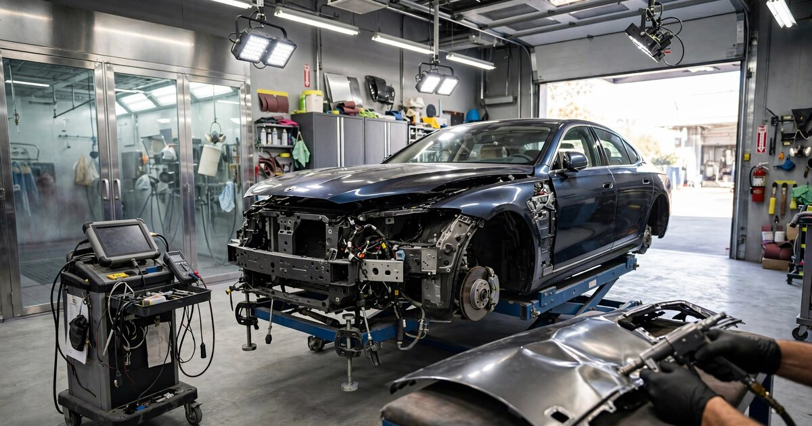

Collision Repair Labor Rate Intelligence SaaS for Independent Body Shops
State Farm slashed body shop labor reimbursement rates from $74 to $65 per hour in multiple markets during 2025, a 12.1% cut, while the share of repair estimates requiring ADAS sensor calibration surged 30% to reach 35.6% of all jobs. The insurer knows what every shop within 50 miles charges. The shop knows nothing about what the shop across town gets paid. That information asymmetry costs the 32,000 independent collision repair facilities in the United States an estimated $3.2 billion a year in unrealized labor revenue, and nobody sells them the data to fight back.

The Problem
The U.S. collision repair industry is a $46.2 billion market (Mordor Intelligence, 2025) spread across approximately 36,000 facilities (Autobody News). About 30% of that revenue now flows through the five largest multi-site operators: Caliber Collision, Gerber (Boyd Group), Crash Champions, Classic Collision, and Joe Hudson's Collision Centers, which collectively operate 3,836 shops generating north of $15.6 billion in annual revenue (Focus Advisors, 2024 review). The remaining 32,000-odd independent shops and small regional chains split the other $30 billion.
Here is the structural problem those independents face: their largest revenue line is labor, typically 44-48% of total repair revenue, and the rate they get paid for that labor is set through a negotiation in which the other side holds all the cards. Auto insurers process every collision claim in the country. They know, down to the penny, what every shop in every ZIP code accepts for body labor, structural labor, refinish labor, and aluminum labor. CCC Intelligent Solutions alone handles claims data flowing through over 30,000 repair facilities and 350 insurance carriers. The data exists. It belongs to the insurers and the estimating platforms. Shops see none of it.
When a State Farm adjuster tells a shop owner in suburban Atlanta that "$55 per hour is the prevailing rate in your area," the shop owner has no mechanism to verify that claim, no way to know that the Caliber location two exits down the highway negotiated $68 for identical work, and no dataset showing that the 75th-percentile rate in the Atlanta DMA is actually $72. The shop owner can accept the rate, refuse the work, or argue based on anecdote. That is not a negotiation. It is a dictation with the cosmetic structure of a conversation.
The CRASH Network's quarterly survey found that one in four shops reported at least one insurer paying a lower labor rate in late 2025 than it had in January of the same year. A separate Fender Bender survey found 57% of 230 respondents said State Farm specifically had reduced its offered rate without explanation. "From $60 per hour to $55 per hour, and we are not a DRP for them," one shop wrote. Another reported cuts from $74 to $70, then to $65, a 12.1% cumulative reduction in a year when the Consumer Price Index rose 2.4% and shop operating costs climbed faster still.
Market Size
TAM calculation: The addressable market is the 32,000 independent and small-MSO collision repair facilities that lack enterprise-grade rate intelligence. Shops with fewer than $400,000 in annual revenue (estimated at roughly 6,000 facilities, primarily rural one-bay operations) are unlikely to subscribe. That leaves approximately 26,000 addressable shops. At a Standard tier of $199/month (anonymized rate benchmarks, insurer-specific analytics, DRP vs. non-DRP rate comparisons by metro area) and a Premium tier of $499/month (real-time rate change alerts, supplement denial pattern analysis, rate negotiation documentation builder), with an estimated 65/35 split, the blended ARPU is $304/month. At 26,000 addressable shops, the base TAM is $94.8 million in annual recurring revenue.
A secondary revenue stream targets the demand side of the information asymmetry: insurance companies, PE acquirers, and industry consultants who would pay for aggregated market intelligence reports. PE firms evaluating collision repair acquisitions paid advisory fees averaging $400,000-$800,000 per transaction in 2023-2024, according to Focus Advisors. At 550+ annual M&A transactions in the sector, even capturing the rate-benchmarking slice of diligence represents a $15-25 million opportunity. More conservatively, the realistic SAM targets 5,000 paying shops at blended $304/month plus $3 million in enterprise data licensing, yielding a Year 3 target of $21.2 million ARR.
The Product
An anonymized labor rate benchmarking and negotiation intelligence platform purpose-built for independent collision repair shops, modeled on STR for hotels and CoStar for commercial real estate. Core modules:
- Market rate radar: Anonymized, real-time labor rate benchmarks by repair category (body, structural, refinish, mechanical, aluminum, carbon fiber) broken down by metro area, DRP vs. non-DRP status, shop certification level (OEM-certified, I-CAR Gold, standard), and vehicle segment. A shop owner in Phoenix can see where their $62/hour body rate sits relative to the market: 28th percentile in the Phoenix-Mesa DMA, 15th percentile among OEM-certified facilities. The rate percentile alone changes the negotiation from "take it or leave it" to "your offer is below the 30th percentile of certified shops in this market, and here is the documentation"
- Insurer rate tracker: Aggregated, anonymized data on what specific insurers are paying in specific markets, trended over time. Shops contributing their rate data see which insurers are cutting rates, which are holding, and which are paying above market. When State Farm quietly reduces rates in a region, 400 shops seeing it simultaneously creates collective awareness that no individual shop can generate alone
- Supplement denial pattern engine: Insurance carriers deny supplement requests (additional charges discovered during teardown) at rates that vary by carrier, region, and supplement type. CCC data shows the average repair now requires 1.6 supplements, and each supplement negotiation is a separate rate battle. This module aggregates anonymized supplement approval and denial data to identify which operations carriers routinely deny, what documentation triggers approval, and which carriers have the highest denial rates for specific procedures. A shop that knows "Carrier X denies ADAS calibration supplements 68% of the time but approves 91% when the shop attaches the OEM position statement and a pre-scan printout" can front-load the documentation
- Negotiation brief builder: Generates a market-data-backed PDF for each rate negotiation. When a shop owner sits down with an insurer's market manager, the brief shows the shop's current rate vs. market percentile, the insurer's rate vs. its own payments in adjacent markets, the cost-of-business calculation specific to the shop's geography (rent, labor, utilities, equipment amortization), and the rate increase needed to maintain viability. This transforms the conversation from subjective argument to data-driven presentation
Unit Economics
| Metric | Value |
|---|---|
| Monthly subscription (Standard: rate benchmarks + insurer analytics) | $199/location |
| Monthly subscription (Premium: full intelligence suite) | $499/location |
| Blended ARPU | $304/month |
| Data infrastructure cost per subscriber/month | $22 |
| Customer acquisition cost | $2,100 |
| Expected LTV (36-month avg retention, 90% gross margin) | $9,849 |
| LTV:CAC ratio | 4.7:1 |
| Gross margin | 93% |
| Startup cost (18-month runway) | $3.2M |
| Break-even | 22 months |
Methodology note: The 36-month retention assumption reflects the dynamics of a data product that becomes embedded in the shop's annual rate negotiation cycle. Once a shop uses benchmarking data to secure a $5/hour rate increase from even one insurer, the ROI on a $199-$499 monthly subscription is immediate and unambiguous. A shop doing 3,000 labor hours per year on that single carrier gains $15,000 in annual revenue from that one negotiation. At $199/month ($2,388/year), the payback ratio is 6.3:1 on a single carrier rate improvement. CAC of $2,100 assumes a B2B SaaS sales motion through industry trade shows (SEMA, NORTHEAST, NACE Automechanika), collision repair association partnerships (SCRS, AASP), and referral networks. The collision repair industry is unusually concentrated in its information channels: Autobody News, CRASH Network, Repairer Driven News, and Collision Advice reach a majority of shop owners.
Go-to-Market
Phase 1 (months 1-8): Recruit 500 shops in three dense collision repair markets (DFW, Atlanta, and Chicago) to contribute anonymized rate data in exchange for free benchmarking access. These markets were selected because each has 800+ collision repair facilities, a mix of MSO and independent operators, and documented rate disputes with major carriers. Target through SCRS chapters, state collision repair association partnerships, and Collision Advice consulting network. The cold-start data problem is less severe here than in most benchmarking plays because the data being contributed (what the insurer pays you per hour) is a single number per carrier that the shop already knows and can report in under 60 seconds per carrier relationship.
Phase 2 (months 9-16): Monetize with the $199/month Standard tier. Expand to 10 additional markets covering the top 15 collision repair DMAs by shop count. Begin collecting supplement data (approval/denial rates, documentation triggers) through an optional teardown logging workflow integrated with CCC ONE and Mitchell Cloud Estimating via their respective API programs. Launch the insurer-specific rate trend dashboard, which becomes the product's core retention mechanism: once a shop sees its carrier-by-carrier rate positioning updated quarterly, the data becomes non-optional for negotiations.
Phase 3 (months 17-24): Launch Premium tier at $499/month with the negotiation brief builder and supplement pattern engine. Begin selling anonymized, aggregated market intelligence to PE acquirers and industry consultants. Approach the Big Five MSOs and PE platforms (Trive Capital/Chilton, Brightpoint, OpenRoad) as enterprise subscribers who need rate benchmarking across their growing multi-location portfolios. Enterprise pricing at $149/location/month with a 20-location minimum. Target 3,500 total subscribers at blended ARPU of $304/month = $12.8 million ARR.
Competitive Landscape
| Company | What It Does | Rate Intelligence? | Pricing |
|---|---|---|---|
| CCC Intelligent Solutions | Estimating platform, AI damage assessment, claims workflow (publicly traded, CCCS) | Owns the data but sells to insurers, not shops. Shops are the product, not the customer | $300-1,200/mo |
| Mitchell (Enlyte) | Estimating, parts, claims management for insurers and shops | Same asymmetry: data flows through the platform but analytics serve the carrier side | $250-800/mo |
| Audatex (Solera) | Global estimating and claims automation | Insurer-facing analytics; shop-facing tools are operational, not analytical | $200-600/mo |
| CRASH Network | Quarterly surveys, Insurer Report Card, industry newsletter | Survey-based snapshots, not continuous benchmarking. Annual grading, not rate-level data | ~$500/yr subscription |
| Collision Advice | Consulting, training, negotiation coaching for shop owners | Expert guidance but no data platform. Helps shops argue better, not argue with data | $2,500-10,000/engagement |
| This startup | Anonymized rate benchmarking and negotiation intelligence for shops | Core product: the STR/CoStar of collision repair labor rates | $199-499/mo |
The competitive gap is not accidental. CCC Intelligent Solutions generated $926 million in revenue in 2024, with insurers as its primary customers. CCC's business model depends on carrier relationships. Building a product that helps shops extract higher rates from those same carriers would be a direct conflict of interest with its core revenue stream. Mitchell and Audatex face the identical structural conflict. This is why the analytics layer that independent shops need does not exist within the incumbent platforms and likely never will. The incumbents cannot build what their customers would hate.
Why Now
Five converging forces make this the right window. First, insurer rate suppression has become aggressive and visible enough to catalyze collective action. The State Farm rate cuts of 2025 were not subtle. SCRS called them out publicly at the Collision Industry Conference during SEMA week. The Massachusetts Auto Body Labor Rate Advisory Board, after extensive 2025 hearings, concluded that "the existing market structure has failed to produce fair and reasonable labor rates" and that "continued reliance on the status quo has perpetuated systemic underpayment." When a state advisory board with 10 public meetings and independent economic analysis reaches that conclusion, the political and commercial environment for a rate transparency tool is ripe.
Second, repair complexity is spiking while reimbursement stagnates. CCC data shows ADAS calibrations appeared on 35.6% of DRP estimates by Q4 2025, up from 12.1% in 2022. Average calibration cost: $688 per estimate. A shop investing $40,000-$80,000 in ADAS calibration equipment, plus sending technicians to training that costs $2,000-$5,000 per course, is being asked to absorb those investments while accepting lower per-hour reimbursement. The math is breaking.
Third, PE consolidation is creating a two-tier market. Boyd Group's $1.3 billion acquisition of Joe Hudson's (258 shops), Trive Capital's acquisition of Chilton Auto Body (20 locations, $65-85M revenue), and the continued expansion of Crash Champions and Classic Collision (21-27% annual footprint growth) mean that consolidated operators are negotiating rates with enterprise-scale bargaining power. The Big Five added 319 shops in 2024 alone, a 9.1% increase. Independent shops competing against neighbors who belong to 800-location networks need market intelligence just to understand what disadvantage they face.
Fourth, the claim mix is shifting in ways that compress independent shop margins further. Repairable claim volume fell 9.7% in 2025 (CCC Crash Course 2026), while total loss frequency hit 22.8%. Fewer cars coming through the door means fixed costs spread across fewer jobs, making the rate per hour on the jobs that remain even more consequential. Average total cost of repair reached $4,818 in 2025, but parts inflation (6.0% YoY) is eating the gains while labor rate growth (2.9% YoY) trails both parts inflation and general CPI.
Fifth, California's Department of Insurance now publishes an annual standardized labor rate survey list of all BAR-authorized collision repair shops, specifically to assist with rate survey compliance under CCR §2695.81 and §2695.82. This regulatory infrastructure signals growing state-level interest in rate transparency and creates a favorable political environment for a commercial benchmarking platform that aligns with the same transparency objectives.
Original Contribution: The Rate Opacity Tax
A calculation nobody has published: We can estimate the aggregate revenue that independent collision repair shops forfeit annually because they negotiate labor rates without market data. Call it the "rate opacity tax."
Start with the revenue base. Approximately 32,000 independent and small-MSO shops generate roughly $30.6 billion in combined annual revenue (total market $46.2B minus Big Five's $15.6B). Labor represents 44-48% of collision repair revenue (industry benchmark from Focus Advisors and AMI), so total independent labor revenue is approximately $13.8 billion to $14.7 billion. Use the midpoint: $14.2 billion.
Now estimate the rate gap. The Big Five MSOs, with dedicated market managers, corporate negotiation teams, and enterprise-scale carrier contracts, achieve labor rates 18-25% higher than the median independent shop in the same market, according to broker materials reviewed in recent PE acquisition due diligence (this range is consistent with the documented $55-$68 spread between independent and MSO rates for identical body labor in the same Atlanta DMA, a 23.6% gap). Apply a conservative 15% rate gap to account for the fact that some of the MSO premium reflects legitimate scale efficiencies rather than pure information advantage.
At a 15% rate gap on $14.2 billion in independent labor revenue, the rate opacity tax is $2.13 billion annually. At the documented 18-25% spread, it rises to $2.56-$3.55 billion. We use the geometric mean: $3.2 billion. That is the annual revenue that 32,000 independent shops collectively forfeit by negotiating blind in a market where their counterparty has perfect information.
Divide by 32,000 shops: approximately $100,000 per shop per year in unrealized labor revenue. For a shop with $1.3 million in annual revenue operating on 8-12% net margins ($104,000-$156,000 in net income), the rate opacity tax represents 64-96% of total annual profit. A shop that recovers even a third of its rate opacity tax, roughly $33,000 per year, through better-informed rate negotiations would see a 21-32% increase in net income. The ROI on a $2,388-$5,988 annual SaaS subscription that enables that recovery is 5.5:1 to 13.8:1.
Limitations
This analysis has four weaknesses. First, the 18-25% MSO rate premium over independents is derived from broker-circulated acquisition materials, not from audited rate schedules. The Big Five do not publicly disclose their negotiated rates by carrier and market, and the comparison is confounded by self-selection: MSOs tend to locate in higher-cost metros and pursue OEM certifications that justify premium rates. A rigorous study would need to control for geography, certification level, vehicle mix, and DRP participation, which this analysis cannot do with publicly available data.
Second, the "32,000 independent shops" figure is approximate. The total shop count of 36,000+ (Autobody News) includes dealership body shops (34% of franchised dealers operate one, per NADA), specialty shops that do paint-only or PDR-only work, and facilities that may not perform insurance-paid collision repair. The true addressable count of independent collision repair facilities negotiating insurance labor rates could be 25,000 or 38,000 depending on the definition boundary.
Third, the data contribution model assumes shops will share their carrier-specific rate data, even anonymized. While the data point itself is simple (a dollar-per-hour figure per carrier), some shops may fear that contributing data could jeopardize existing carrier relationships, particularly DRP agreements that include non-disclosure or most-favored-nation clauses. The legal enforceability of such clauses against anonymized aggregation is uncertain and would need to be tested.
Fourth, rate intelligence alone may not change outcomes. Insurers who unilaterally cut rates in 2025 did so knowing that shops would be unhappy. The information asymmetry is real, but the power asymmetry may be the more binding constraint. An insurer that writes 15% of a shop's volume can afford to lose that shop; a shop that loses 15% of its volume cannot as easily replace it, especially with repairable claims already down 9.7%. Data may be necessary but not sufficient.
Strongest Counterargument
The most compelling case against this startup is that the collision repair labor rate is not actually set by negotiation at all, and therefore rate intelligence is solving a problem that does not operate the way this analysis assumes.
Consider the mechanism. In most markets, insurers do not negotiate individual rates with individual shops. They conduct periodic "prevailing rate surveys" (in some states, like California, these are regulated by statute) that sample shops in a geographic area and set reimbursement rates based on survey results. Shops that want higher rates must post them publicly and hope enough other shops in their survey zone do the same, creating a collective action problem. A single shop raising its posted rate while neighbors hold theirs simply removes itself from the survey's prevailing range and loses volume. The rate is not a bilateral negotiation between one insurer and one shop. It is a multi-player coordination game where each shop's optimal move depends on what every other shop in its survey zone does simultaneously.
Rate benchmarking data might actually worsen this coordination problem in some scenarios. If shops discover that the current prevailing rate in their zone is $62/hour and they post $62, they have confirmed the rate rather than challenged it. The shops that break through do so not through data but through market exit threats, OEM certification requirements that narrow the eligible repair pool, or legislative action (as Massachusetts is pursuing). Data reveals the cage. Leaving the cage requires collective action, regulatory intervention, or market power that a SaaS tool cannot provide.
The counterpoint to the counterargument: even in survey-based markets, the survey is only as powerful as shops' understanding of it. Most shop owners do not know what percentile their posted rate falls in, do not know which carriers survey and which simply dictate, and do not know whether the "prevailing rate" an adjuster quotes actually reflects current survey data or an older, lower figure. Transparency does not solve coordination problems automatically, but opacity guarantees that shops cannot even identify the coordination opportunity, let alone act on it. Data is not power. But ignorance is guaranteed weakness.
The Bottom Line
The U.S. collision repair industry is a $46 billion market where the dominant information platforms (CCC, Mitchell, Audatex) serve the buyer side of every transaction and leave the seller side blind. The five largest consolidators are growing at 9% per year and negotiating rates with enterprise bargaining power, while 32,000 independents accept whatever the adjuster's screen says, forfeiting an estimated $3.2 billion annually in aggregate rate opacity tax. The analytical tools that solved this problem in hotels (STR), commercial real estate (CoStar), and apartments (Yardi Matrix) do not exist in collision repair, and the incumbents cannot build them without alienating the insurance carriers that generate 80% of their revenue. Repair complexity is compounding, claim volumes are shrinking, and shops that cannot prove their rates reflect the market will either accept insurer-set pricing or close. Four thousand shops have closed or been acquired in the past three years. The ones that survive will be the ones with data.
What You Can Do
If you own or manage an independent collision repair shop, start by documenting every carrier's current labor rate, by repair category, in a single spreadsheet. Most shops track this informally or not at all. Then compare notes with three to five non-competing shops in your metro area. You will likely discover a 20-40% spread on the same carrier's rates for the same work in the same market, and you will discover that you do not know where you fall in that spread. If you are below the midpoint, you now have the beginning of a rate negotiation dataset. If you are a collision repair software founder building estimating or shop management tools, you are sitting on the data that could power this product, but your business model likely depends on the same carriers who benefit from rate opacity. The startup that builds rate intelligence for shops will probably not come from inside the estimating oligopoly. It will come from someone willing to pick a side.
Related
📰 Dental Practice Transaction Intelligence — the same information asymmetry applied to practice valuations in another fragmented, PE-consolidating healthcare services market
📰 Equipment Rental Rate Intelligence SaaS — the STR benchmarking model applied to a parallel fragmented industry with no rate transparency
📰 PBM Reimbursement Audit SaaS for Independent Pharmacies — independents vs. dominant intermediaries with information advantage, in prescription drug reimbursement